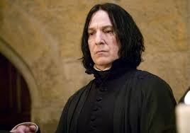
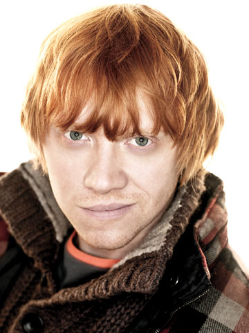

characters
Harry James Potter
(b. 31 July 1980)
He was the only child and son of James and Lily Potter (née Evans), both members of the original Order of the Phoenix.
Harry's birth was overshadowed by a prophecy, naming either himself or Neville Longbottom() is the one with the power to vanquish Lord Voldemort.
was an English half-blood wizard, one of the most famous wizards of modern times.
After half of the prophecy was reported to Voldemort courtesy of Severus Snape(), Harry was chosen as the target due to his many similarities with the Dark Lord(
 ).
).This caused the Potter family to go into hiding.
Voldemort made his first vain attempt to circumvent the prophecy when Harry was a year and three months old.
During this attempt, he murdered Harry's parents as they tried to protect him, but this unsuccessful attempt to kill Harry led to Voldemort's first downfall.
This downfall marked the end of the First Wizarding War, and to Harry henceforth being known as the "Boy Who Lived", as he was the only known survivor of the Killing Curse.
Minister Hermione Jean Granger
(b. 19 September, 1979)
She was an English Muggle-born witch born to Mr and Mrs Granger.
At the age of eleven, she learned about her magical nature and was accepted into Hogwarts School of Witchcraft and Wizardry.
Hermione began attending Hogwarts in 1991 and was Sorted into Gryffindor House.
She possessed a brilliant academic mind and proved to be a gifted student in almost every subject that she studied.
Ronald Bilius "Ron" Weasley
(b. 1 March, 1980)
He was an English pure-blood wizard, the sixth and youngest son of Arthur and Molly Weasley (née Prewett).
He was also the younger brother of Bill, Charlie, Percy, Fred, George, and the elder brother of Ginny.
Ron and his brothers and sister lived at the Burrow, on the outskirts of Ottery St Catchpole.